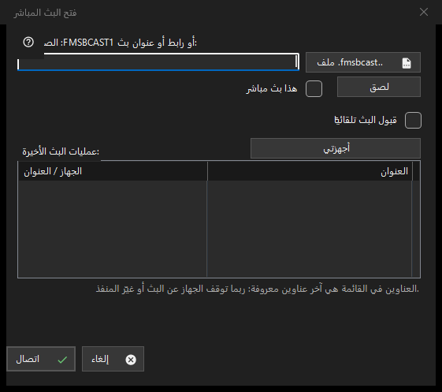

البث المباشر
الغرض من هذه النافذة
الصق رمز FMSBCAST1: أو رابطًا أو عنوان تدفق، أو اختر ملف .fmsbcast. حدد العنوان العادي كبث مباشر فقط إذا كان مصدرًا حيًا؛ وإلا يفتح كوسائط عند الطلب. اضغط اتصال وأدخل كلمة مرور المشاهد إذا طُلبت. قد يتوقف عنوان حديث عن العمل بعد توقف المرسل أو تغيير المنفذ. قبول Cast تلقائيًا خيار صريح منفصل.


بهذا الترتيب
الصق رمز FMSBCAST1: أو رابطًا أو عنوان تدفق، أو اختر ملف .fmsbcast. حدد العنوان العادي كبث مباشر فقط إذا كان مصدرًا حيًا؛ وإلا يفتح كوسائط عند الطلب. اضغط اتصال وأدخل كلمة مرور المشاهد إذا طُلبت. قد يتوقف عنوان حديث عن العمل بعد توقف المرسل أو تغيير المنفذ. قبول Cast تلقائيًا خيار صريح منفصل.
عناصر النافذة
FMSBCAST1: / .fmsbcast
الصق رمز FMSBCAST1: أو رابطًا أو عنوان تدفق، أو اختر ملف .fmsbcast. حدد العنوان العادي كبث مباشر فقط إذا كان مصدرًا حيًا؛ وإلا يفتح كوسائط عند الطلب. اضغط اتصال وأدخل كلمة مرور المشاهد إذا طُلبت. قد يتوقف عنوان حديث عن العمل بعد توقف المرسل أو تغيير المنفذ. قبول Cast تلقائيًا خيار صريح منفصل.